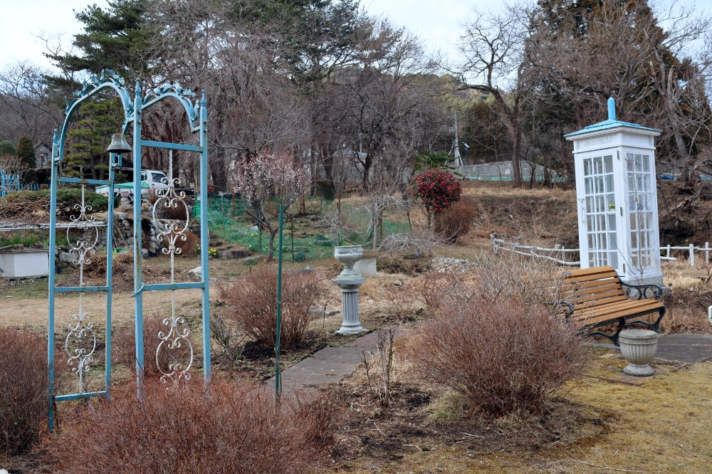
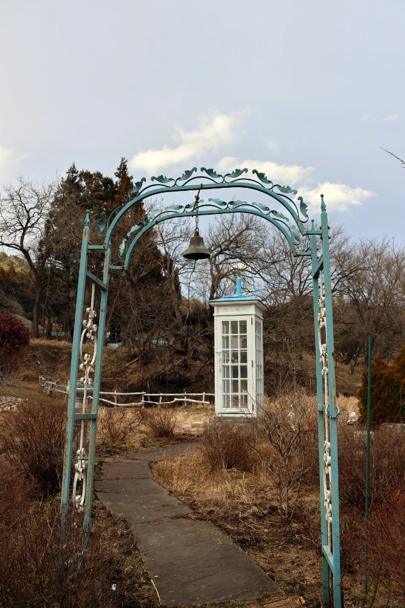

fin
できないことなんて無い
唄えない歌なんて無いんだ
きみは何も言えない、けどゲームのやり方を知ることはできる
簡単だ
作れないものは創れない
掬われない人は救えないんだ
きみは何もできない、けどやがて君らしく在る方法を知ることができる
焦るなよ
All you need is love
All you need is love, love
知られていないことは何もない
示されていないものは見えないんだ
きみがいる場所は きみがいるべき場所以外にはない
気楽にいこう
(All together now!)
(Everybody!)
All You Need Is Love (by The Beatles): は、1967年7月にアルバム未収録シングルとしてリリースされた。
John Lennon によって書かれ、Lennon-McCartney としてクレジットされている。 この曲は、世界初のテレビ生中継番組Our Worldにイギリスが提供したもので、 1967年6月25日に London の EMI スタジオでこの曲の演奏を撮影した。 (完全な生演奏ではなく、事前に録音されたバッキング・トラックも合わせて使用した。)
この番組は衛星を通じて放送され、25カ国で4億人以上の人々に視聴された。
Lennon の歌詞は、番組の国際的な視聴者に配慮して意図的に単純化され、 Summer of Loveにまつわる Utopiaの理想を捉えたものだった。
曲は George Martin によるオーケストラ・アレンジで、 フランス国歌La Marseillaiseで始まり、 Glenn MillerのIn the Mood, Greensleeves, Bachの Invention 第8番ヘ長調を経て、 Yesterday, She Loves Youの引用で終わる。
The Beatles は (ドラムセットの後ろにいた Starr を除いて) 高いスツールに座り、13人編成のオーケストラを従えた。 バンドは床に座った友人や知人に囲まれ、フェードアウトの間、リフレインに合わせて一緒に歌った。
これには Mick Jagger, Eric Clapton, Marianne Faithfull, Keith Richards, Keith Moon, Graham Nash も参加した。
この曲の愛の重要性の提唱は、1965年に Lennon が The Wordの歌詞でこの考えを述べたこと、 そして Harisson がWithin You Without Youの中で 「僕らの愛があれば、世界を救うことができる」と宣言したことに続くものであった。
The Beatles のマネージャー Brian Epstein は、このパフォーマンスをバンドの "最高の" 瞬間であると評した。
また、"Melody Maker" 誌に寄せた声明の中で次のように述べている: 「インスピレーションに満ちた曲で、彼らは本当に世界にメッセージを伝えたかったんだ。 この曲の良いところは誤解を招かないことだ。愛さえあればいいんだという明確なメッセージだ。」 Wikipediaより
気づいたんだ
君がいたからなんだ
だからもし 僕がこれをやり遂げられたのなら
君がいてくれたからなんだよ
だから 今も あの頃も
もし また最初からやり直すとしても
結局、僕らが辿り着くのは
I love you に決まってるんだよ
ときどき
君のことを想うんだ
今だって あの頃だって
僕は 君に そばにいてほしいんだ
いつだって 僕のそばに帰ってきてほしい
本当だよ
君とやってきたんだから
だからもし 君が去ってしまったのなら...
わかってる 君はもう決して留まれないんだ

ときどき
君を想うんだ
今だって あの頃だって
僕は 君に そばにいてほしいんだ

( なかなかいいね )